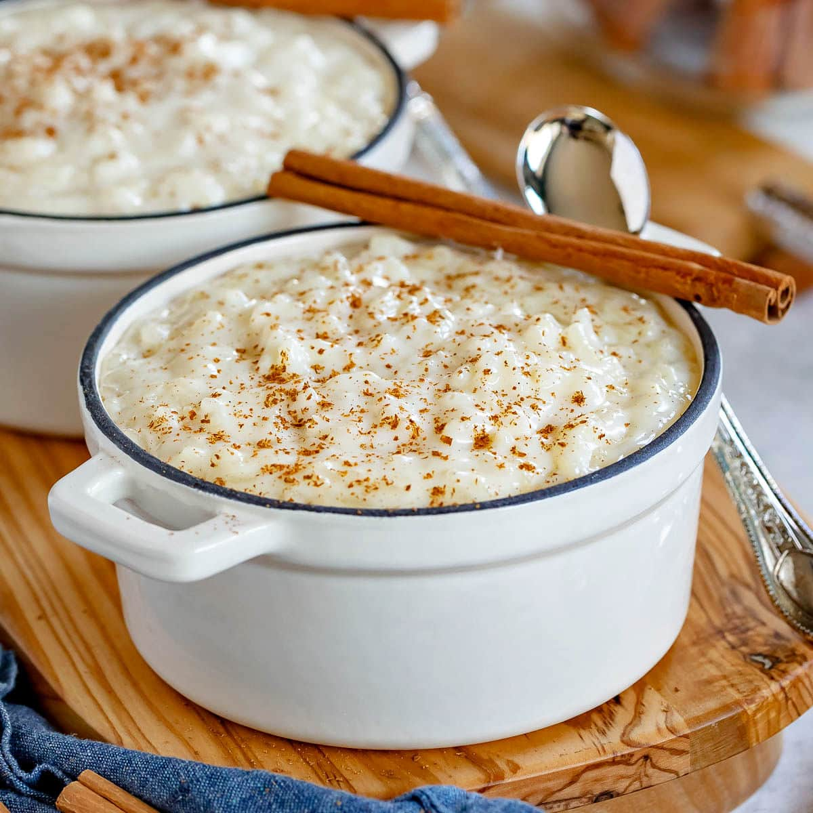

Easy Rice Pudding Recipe

Ingredients
- 4 1/2 cups whole milk
- 3/4 cups granulated sugar
- 1 1/2 cups water
- 1 cinnamon stick
- 1 cup arborio rice
- 1 teaspoon vanilla bean paste substitute vanilla extract
- 2/3 cup golden raisins optional
Steps
- Combine the milk, water, sugar, cinnamon stick and rice. Stir to combine.
- Bring to an intense simmer, stirring often. Reduce heat.
- Simmer for 35 to 45 minutes, until the rice is tender.
- Stir in vanilla and raisins.
- Transfer the pudding into a serving container, cover tightly and cool.